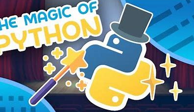

Explorez la Magie de Python:les fondamentaux du langage

Introduction
Dans cette aventure nous découvrirons la puissance, la flexibilité et la simplicité de ce langage qui se défie les limites de la programmation traditionnelle. Python est votre allié essentiel dans la conquête de nouveaux horizons technologiques. Que vous souhaitiez manipuler d'énormes volumes de données, concevoir des applications web dynamiques ou plonger dans le domaine de l'intelligence artificielle, Python vous guide vers des sommets inattendus. Avec sa syntaxe claire et son approche intuitive, Python démocratise la programmation, ouvrant ainsi la voie à la créativité et à la logique, où chaque ligne de code est un pas de plus vers la concrétisation de vos ambitions. Dans un monde en constante évolution de la technologie, Python devient une baguette magique, offrant des possibilités infinies pour ceux qui se laissent emporter par sa magie.
Variables et types de données
En Python, les variables servent de conteneurs pour stocker différentes formes de données. Chaque variable est associée à un nom qui permet de la référencer et de manipuler sa valeur. Python est un langage dynamiquement typé, ce qui signifie que vous n'avez pas besoin de déclarer explicitement le type de variable lors de leur création ; le type est déduit automatiquement lors de l'attribution de valeurs
Ainsi nous distinguons plusieurs types primitifs de vraiable a savoir: Entiers (int) ,Flottants (float),Chaînes de caractères (str),Booléens (bool),Listes (list),Tuples (tuple) et Dictionnaires (dict)
Types de données en Python
-
int: pour les nombres entiersLes nombres entiers sont des nombres entiers positifs ou négatifs sans partie décimale.
# Exemple d'utilisation d'un entier x = 10 print(x) # Affiche 10float: pour les nombres décimauxLes nombres décimaux sont des nombres avec une partie décimale.
# Exemple d'utilisation d'un nombre décimal pi = 3.14 print(pi) # Affiche 3.14str: pour les chaînes de caractèresLes chaînes de caractères représentent du texte.
# Exemple d'utilisation d'une chaîne de caractères name = "Afdel" print(name) # Affiche Alicebool: pour les valeurs booléennes (True ou False)Les valeurs booléennes représentent le vrai (True) et ou le faux (False).
# Exemple d'utilisation d'une valeur booléenne is_student = True print(is_student) # Affiche Truelist: pour les listes ordonnées d'élémentsLes listes sont des collections ordonnées et modifiables d'éléments.
# Exemple d'utilisation d'une liste numbers = [1, 2, 3, 4, 5] print(numbers) # Affiche [1, 2, 3, 4, 5]tuple: pour les tuples, des séquences immuables d'élémentsLes tuples sont des collections immuables d'éléments ordonnés.
# Exemple d'utilisation d'un tuple point = (10, 20) print(point) # Affiche (10, 20)dict: pour les dictionnaires, des paires clé-valeurLes dictionnaires sont des collections associatives d'éléments.
# Exemple d'utilisation d'un dictionnaire person = {'name': 'Alice', 'age': 25} print(person) # Affiche {'name': 'Alice', 'age': 25}set: pour les ensembles, des collections non ordonnées d'éléments uniquesLes ensembles sont des collections non ordonnées d'éléments uniques.
# Exemple d'utilisation d'un ensemble unique_numbers = {1, 2, 3, 4, 5} print(unique_numbers) # Affiche {1, 2, 3, 4, 5}
Structures de contrôle en Python
Python offre diverses structures de contrôle pour gérer le flux d'exécution du programme :
-
if: pour exécuter du code conditionnellementL'instruction
ifpermet d'exécuter du code uniquement si une condition est vraie.# Exemple d'utilisation de la structure if x = 10 if x > 0: print("x est positif") else: print("x est négatif")
Structures de contrôle en Python
Python offre diverses structures de contrôle pour gérer le flux d'exécution du programme :
if : pour exécuter du code conditionnellement
L'instruction if permet d'exécuter du code uniquement si une condition est vraie.
if condition:
# Code à exécuter si la condition est vraie
elif autre_condition:
# Code à exécuter si une autre condition est vraie
else:
# Code à exécuter si aucune condition n'est vraie
# Exemple d'utilisation de la structure if
x = 10
if x > 0:
print("x est positif")
elif x = 0:
prin("x est nul")
else:
print("x est négatif")
for : pour parcourir des séquences
L'instruction for permet de parcourir des séquences comme les listes, les tuples ou les chaînes de caractères.
# Exemple d'utilisation de la boucle for
numbers = [1, 2, 3, 4, 5]
for num in numbers:
print(num)
while : pour exécuter une boucle tant qu'une condition est vraie
L'instruction while permet d'exécuter une boucle tant qu'une condition est vraie.
# Exemple d'utilisation de la boucle while
count = 0
while count < 5:
print(count)
count += 1
Fonctions
Les fonctions permettent de regrouper du code réutilisable :
def greet(name):
print("Bonjour,", name)
greet("Alice")Gestion des exceptions
Python permet de gérer les erreurs à l'aide des blocs try et except :
try:
result = 10 / 0
except ZeroDivisionError:
print("Division par zéro non autorisée")